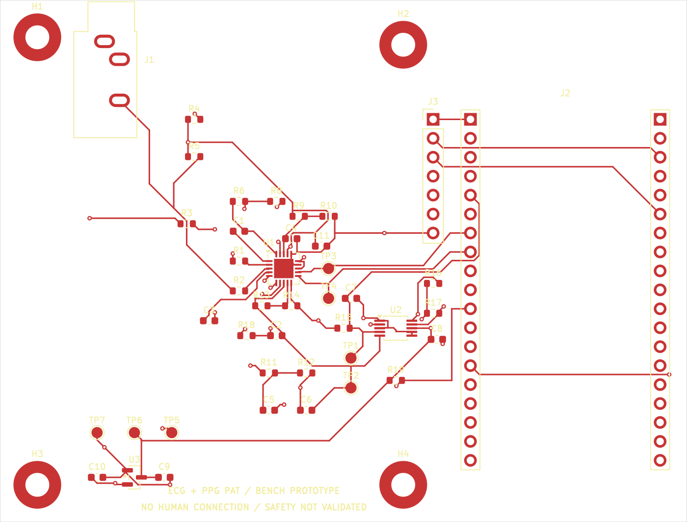
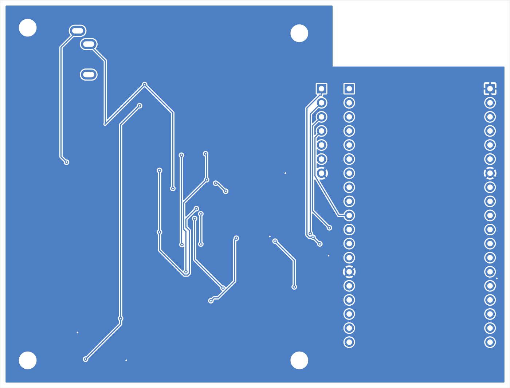

Báo cáo đã đính chính theo CAD mới, không thay thế hướng dẫn lắp đã duyệt hoặc kết quả nghiệm thu phần cứng. Schematic đã sửa hồi tiếp, bộ lọc và giao tiếp FR/ALERT; hai bài kiểm tra netlist PASS, ERC 0, còn hai loại kiểm tra không áp dụng được ghi trong báo cáo ERC. PCB đã dựng lại từ XML: DRC 0, unrouted 0, schematic parity 0. Hồ sơ mới nhất ở outputs/narrow_verified_20261113; module thực, phần mềm thu nhận và an toàn chưa nghiệm thu. Gói Gerber cũ không được dùng để đặt bo.
LDO không cách ly điện. Chưa có chứng nhận IEC 60601-1, kết quả thử trên người hoặc độ chính xác thời gian đo thực nghiệm. Không gắn điện cực lên người chỉ vì dùng pin hay CAD đã sạch; cần đánh giá an toàn phù hợp. Xem README của dự án để biết điều kiện thử và giới hạn kiểm chứng.
Thời gian lan truyền sóng mạch (Pulse Transit Time - PTT) là khoảng thời gian sóng xung áp lực động mạch di chuyển giữa hai điểm trong hệ mạch máu. Trong y sinh, PTT có mối tương quan nghịch biến chặt chẽ với huyết áp động mạch (Blood Pressure) và độ cứng thành mạch (Arterial Stiffness). Khi huyết áp tăng, thành động mạch căng cứng hơn khiến tốc độ truyền sóng mạch (Pulse Wave Velocity - PWV) tăng lên, dẫn đến PTT rút ngắn lại.
Do kỹ thuật đo PTT kinh điển cần đặt hai cảm biến áp lực hoặc quang học dọc theo một động mạch (như từ động mạch cảnh đến động mạch đùi), phương pháp phổ biến và thuận tiện nhất trong các thiết bị đeo (wearable) là đo Pulse Arrival Time (PAT): khoảng thời gian tính từ đỉnh sóng R trên điện tâm đồ (ECG) đại diện cho thời điểm khử cực thất trái đến chân sóng mạch thể tích quang học (PPG) thu được tại mao mạch đầu ngón tay.
| Khối chức năng | Thông số thiết kế | Cơ sở kỹ thuật & Ghi chú |
|---|---|---|
| Kênh đo ECG | 1 chuyển đạo vi sai, 3 điện cực (RA, LA, RL) Băng thông: 0.5 Hz – 40 Hz Độ lợi tổng (Gain): 1100 V/V (60.8 dB) |
IC chuyên dụng Analog Devices AD8232ACPZ. Cấu hình y tế "Cardiac Monitor" tiêu chuẩn. |
| Dò hở điện cực | LOD+ và LOD− (DC Lead-Off Detection) | Phát hiện khi điện cực tuột khỏi bề mặt da bệnh nhân thông qua 2 điện trở kéo lên 10 MΩ. |
| Bộ chuyển đổi ADC ECG | TI ADS1115IDGST 16-Bit ΔΣ ADC Tốc độ lấy mẫu: 475 SPS (tùy chọn 860 SPS) Giao tiếp I2C Fast-Mode (400 kHz) |
Đo vi sai (AIN0 − AIN1) với PGA ±2.048V. Chân ALERT/RDY phát ngắt phần cứng báo mẫu hoàn tất. |
| Kênh đo PPG | Module cảm biến quang MAX30102 Kênh hồng ngoại (IR 880 nm), 400 SPS, 18-bit Độ rộng xung LED: 411 µs |
Cắm qua header 7 chân giả định, chưa xác nhận module thực (VIN, SCL, SDA, INT, RD, IRD, GND). Địa chỉ I2C: 0x57. |
| Đồng bộ thời gian | Bộ đếm thời gian thực 64-bit microsecond Độ phân giải bộ đếm không phải độ chính xác đồng bộ. Chưa có phép đo timing trên phần cứng. |
Sử dụng đồng hồ nội vi phần cứng esp_timer_get_time() của ESP32 qua ngắt ngoài ISR. |
| Nguồn nuôi & An toàn | Nguồn pin Li-ion 3.7V hoặc Power Bank 5V LDO Analog riêng: MCP1700-2802E (2.8V danh định) |
LDO không cách ly điện. R1/R2/R3 = 360 kΩ không thay thế đánh giá an toàn hoặc chứng nhận IEC 60601-1. |
| Kích thước PCB | 100 mm × 80 mm (Chuẩn 2 lớp, ≤100×100mm) | Giá gia công và vận chuyển chưa có báo giá xác nhận. |

AD8232 dùng rail analog 2.8 V. Chân 9 OPAMP− nối R13.2 và R14.1; R13 = 100 kΩ về REFOUT, R14 = 1 MΩ về OUT. Độ lợi op-amp danh định K = 1 + R14/R13 = 11. Tầng IA có độ lợi danh định 100; tích danh định 1100 không phải đáp ứng toàn hệ thống đã đo.
ADS1115IDGST dùng package DGS VSSOP-10; footprint KiCad TSSOP-10_3x3mm_P0.5mm có land pattern tương thích DGS. AIN0 nhận ECG_OUT, AIN1 nhận REFOUT. R15 = 1 kΩ nối OUT đến ECG_OUT, C7 = 10 nF về GND; không phải mạng lọc vi sai đối xứng hai điện trở. ALERT/RDY có R19 = 10 kΩ kéo lên 3V3 và nối GPIO27. I²C dùng R16/R17 = 4.7 kΩ; phải đo rise time với module và điện dung bus thực.
U3 MCP1700-2802E SOT-23: chân 1 GND, chân 2 VOUT = +VS_A 2.8 V, chân 3 VIN = +3V3. C10 = 1 µF tại đầu ra LDO, C9 = 1 µF tại đầu vào; C11 = 0.1 µF gần nguồn U1, C8 = 0.1 µF gần U2. LDO không cách ly điện và không bảo đảm loại bỏ toàn bộ nhiễu ESP32. Chưa có phép đo ripple, dropout hoặc tải đỉnh.
Bo hai lớp 92 × 70 mm, giảm 19,5% diện tích từ 100 × 80 mm; giữ 46 footprint và 151 node schematic. ESP32 dịch trái 8 mm tới (63; 16), J3 giữ tại (58; 16), H2/H4 tại (54; 6)/(54; 65). Jack J1 tại (14; 5,55), hướng cắm ra cạnh trên. Fanout và ground return C8 đã sửa; chưa đo nhiễu thực. Đã thu ngắn các nút đầu vào, REFIN và hồi tiếp; đặt bypass gần U1/U2 và LDO. Socket ESP32 có hai hàng cách 25.4 mm. Vùng cấm đồng anten x = 60…92 mm, y = 0…12 mm áp dụng cả F.Cu/B.Cu. B.Cu có vùng GND đã refill; các đường B.Cu vẫn tạo khe nên không gọi toàn bộ mặt đáy là plane nguyên vẹn.
| Kiểm tra | Kết quả bản thu gọn ngày 13/11/2026 | Giới hạn |
|---|---|---|
| ERC, KiCad 10.0.8 | 0 lỗi / 0 cảnh báo được bật | Hai loại không áp dụng: SPICE và global label chỉ xuất hiện một lần; xem erc.rpt |
| DRC, unrouted, schematic parity | 0 / 0 / 0 | Xem outputs/narrow_verified_20261113/drc.json; ignored_checks rỗng |
| Đối chiếu netlist độc lập | PASS: ref, value, footprint, symbol path, pad/net | Không chứng minh đáp ứng analog hoặc tính an toàn |
| DFM và module thực | Chưa phát hành | Chưa xác nhận mẫu socket/module, báo giá xưởng, stencil, viewer toàn gói và phép đo bench |

Do tần số dao động nội của ADS1115 có thể lệch tới ± 10% theo nhiệt độ môi trường, việc dựa vào tốc độ lấy mẫu cố định theo lý thuyết sẽ tạo ra sai số tích lũy nghiêm trọng. Giải pháp trong đề tài là sử dụng kiến trúc Event-Driven Hardware Timestamping:
ALERT/RDY của ADS1115 kích hoạt ngắt ngoài (Falling Edge ISR) trên GPIO27.esp_timer_get_time() (độ phân giải 1 µs) và đẩy vào hàng đợi FreeRTOS (Queue).Tín hiệu ECG số được xử lý qua chuỗi giải thuật phát hiện phức bộ QRS nổi tiếng của Pan-Tompkins:
BOM hiện hành xuất trực tiếp từ schematic tại outputs/narrow_verified_20261113/BOM.csv. Có 11 tụ, 18 điện trở, 3 IC, 3 connector/module interface, 4 lỗ GND và 7 testpoint. Không gán mã LCSC hoặc giá khi chưa đối chiếu MPN, dung sai, điện áp/công suất và tình trạng bán hàng. Ngân sách 500.000 VND là mục tiêu, chưa có báo giá xác nhận.
MAX30102: chưa chọn và xác nhận chính xác module bảy chân VIN/SCL/SDA/INT/RD/IRD/GND. ESP32: footprint theo DevKitC V4 38 chân, không bảo đảm mọi board clone. Cần đối chiếu mẫu thật, thứ tự chân, mức logic và in 1:1 trước đặt bo. Lỗ bắt vít/testpoint không phải linh kiện dán máy; file placement_mm.csv là tọa độ kỹ thuật, chưa duyệt lắp ráp tự động.
⚠️ CẢNH BÁO AN TOÀN & BẢO LƯU KIỂM THỬ: Hệ thống KHÔNG CÓ biến áp/cách ly quang y tế chuẩn IEC 60601-1 (LDO MCP1700 không cách ly điện). Toàn bộ thử nghiệm thuật toán và đồng bộ thời gian thực hiện tại được xác thực trên MÔ PHỎNG VÀ DỮ LIỆU TỔNG HỢP (SYNTHETIC TELEMETRY), TUYỆT ĐỐI KHÔNG cấp chứng nhận thử nghiệm trên người khi chưa qua kiểm định an toàn điện áp lưới và dòng rò y tế.
| Bước | Phép thử nghiệm | Phương pháp thực hiện | Tiêu chí chấp thuận (DoD) | Trạng thái Audit Độc Lập | Thiết bị Lab bắt buộc |
|---|---|---|---|---|---|
| 1 | Nguồn cấp & LDO 2.8V | Đo điện áp tĩnh TP6 (+3.3V) và TP5 (+VS_A), đo dòng tĩnh Iq khi cấp nguồn pin. | Đo +VS_A theo dung sai MCP1700-2802E tại điện áp vào, tải và nhiệt độ thực; kiểm chập khi tắt nguồn, giới hạn dòng khi cấp bench. | CHỜ ĐO BENCH | DMM 6.5 digits, Nguồn DC tuyến tính |
| 2 | Giao tiếp I2C 400kHz | Quét địa chỉ 0x48 (ADS1115) và 0x57 (MAX30102), đo thời gian tăng tr với Rpullup 4.7k. | Phát hiện đúng 2 địa chỉ, thời gian tăng tr < 300ns (với Cb ≤ 50pF). | CHỜ ĐO BENCH | Logic Analyzer 100MHz, Dao động ký số |
| 3 | Nhiễu, CMRR & Bộ lọc | Đo điện áp tham chiếu TP2 (REFOUT), đo đáp ứng HPF và LPF; f0 LPF lý tưởng 41.09 Hz. | Đo REFOUT gần 1.4 V và đáp ứng/gain thực; chưa có CMRR đo của toàn bo. | CHỜ ĐO BENCH | Máy phân tích phổ mạng (Bode 100 / Signal Generator) |
| 4 | Chức năng Lead-Off | Mô phỏng hở mạch điện cực và đóng mạch bằng tải trở da tương đương (100k - 1M). | LOD+/LOD- lên mức cao theo rail analog 2.8 V khi hở, về mức thấp (0V) khi tiếp xúc. | CHỜ ĐO LAB | Mô hình tải trở giả lập tiếp xúc sinh học |
| 5 | Thu nhận tín hiệu ECG | Cấp tín hiệu sóng tim chuẩn từ nguồn mô phỏng tín hiệu y sinh chuẩn vào Jack 3.5mm. | Dạng sóng P-QRS-T rõ nét, nhận dạng đỉnh R chính xác qua giải thuật Pan-Tompkins. | CHỜ ĐO LAB | Máy phát xung tim chuẩn (Patient Simulator Fluke/Rigol) |
| 6 | Cảm biến quang PPG | Dùng optical phantom để kiểm module đã xác nhận; chưa cho phép thử gắn điện cực lên người. | Sóng thể tích nhịp nhàng, tách biệt rõ đỉnh tâm thu và chân sóng. | CHỜ ĐO LAB | Mô hình ngón tay giả lập quang học (Optical Phantom) |
| 7 | Ước lượng PAT/PTT | Xử lý đồng bộ 2 luồng dữ liệu, đánh dấu timestamp chưa hiệu chuẩn; chưa áp dụng bù trễ cố định để suy ra PTT. | Đo sai số với nguồn ECG/PPG giả lập chung clock; không lấy một khoảng PAT cố định làm tiêu chuẩn chính xác. | CHỈ KIỂM DỮ LIỆU MÔ PHỎNG | Hệ thống thu thập dữ liệu nhúng đồng bộ |
CAD mới đã qua kiểm tra trong outputs/narrow_verified_20261113, DRC không có loại bị bỏ qua. Gerber đã mở và render bằng gerbv 2.10.0; 86 lỗ và slot được đối chiếu với PCB. gerbv bỏ qua metadata X2 và có cảnh báo nhận diện lớp đáy rỗng/mask chỉ dùng region; chưa được duyệt CAM với xưởng. Gói cũ bị giữ trạng thái REJECT, bản PCB trước dựng lại được bảo toàn. Firmware và host đã tích hợp bản sửa ngày 13/11/2026: packet tách E/P giữ từng mẫu FIFO, báo lỗi I²C và timestamp chưa chắc chắn, giữ queue-drop đến khi enqueue thành công. Test helper C biên dịch mới, enqueue thực trên host harness, protocol và DSP đều PASS; mô phỏng nhận 13 nhịp. Build ESP-IDF v5.5 cho ESP32 đã PASS, gồm ứng dụng 776160 byte, bootloader và partition table; lần build kiểm lại cũng PASS. Chưa kiểm timing trên bo thật; PAT từ firmware vẫn bị khóa. Chưa phát hành chế tạo, chưa nghiệm thu sản phẩm và không cho phép sử dụng trên người.